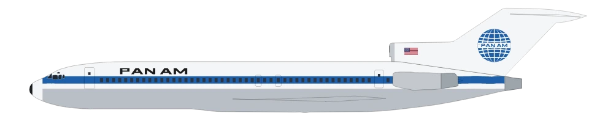

Pan American World Airways in 1985
Pan American World Airways flew 2,448 flights a week in 1985. Its busiest airports were New York, Miami and Berlin. Here are its routes and its planes from that year's timetable.

Paint: Blue cheatline (as worn in 1985). Open Liveries drew it from dated photos.
Busiest airports
| Airport | Departures a week |
|---|---|
| New York (JFK) | 334 |
| Miami (MIA) | 288 |
| Berlin (TXL) | 263 |
| Frankfurt (FRA) | 144 |
| Washington (DCA) | 77 |
| London (LHR) | 77 |
| Orlando (MCO) | 70 |
| Tampa (TPA) | 70 |
Planes
| Type | Flights a week |
|---|---|
| 727 | 1,015 |
| 737 | 619 |
| 747 | 487 |
| L-1011-500 | 138 |
| 747SP | 105 |
| A300 | 84 |
Routes
These are all the city pairs Pan Am flew. Both directions count together.
| Route | Planes | Flights a week |
|---|---|---|
| Frankfurt – Berlin | 737 | 200 |
| Hamburg – Berlin | 737 | 106 |
| Washington – New York | 727 | 105 |
| Miami – Tampa | 727 | 98 |
| Orlando – Miami | 727 | 98 |
| Munich – Berlin | 737 | 96 |
| Stuttgart – Berlin | 737 | 63 |
| Frankfurt – New York | 747 | 42 |
| La Guardia – Miami | 727 | 42 |
| Mexico City – Miami | 727 | 42 |
| New York – London | 747 | 42 |
| New York – Miami | L-1011-500 | 42 |
| Washington – Miami | 727 | 42 |
| Nuremberg – Berlin | 737 | 36 |
| Barbados – Port of Spain | A300, 727 | 28 |
| Boston – New York | 727, A300 | 28 |
| Detroit – New York | 727, L-1011-500 | 28 |
| Hamburg – London | 737 | 28 |
| Houston – Miami | 727 | 28 |
| Houston – New York | 747, 727 | 28 |
| New York – Philadelphia | 727 | 28 |
| New York – Chicago | A300 | 28 |
| New York – Orlando | 727 | 28 |
| New York – San Francisco | 747SP, 747 | 28 |
| New York – Los Angeles | 747 | 28 |
| New York – Tokyo | 747SP | 24 |
| Antigua – St. Maarten | 727, 747 | 21 |
| London – Miami | 747 | 21 |
| Miami – New Orleans | 727 | 21 |
| Frankfurt – London | 747, 737 | 16 |
| Barbados – Miami | 727 | 14 |
| Berlin – Zurich | 737 | 14 |
| Brussels – London | 737 | 14 |
| Brussels – Nuremberg | 737 | 14 |
| Charlotte – Washington | 727 | 14 |
| Chicago – San Francisco | 727 | 14 |
| Dallas – San Antonio | 727 | 14 |
| Dallas – New York | 727 | 14 |
| Detroit – Indianapolis | L-1011-500 | 14 |
| Detroit – Chicago | 727 | 14 |
| Geneva – Istanbul | 737 | 14 |
| Guatemala City – Miami | 727 | 14 |
| Hong Kong – Tokyo | 747 | 14 |
| Hong Kong – San Francisco | 747SP | 14 |
| Hong Kong – Singapore | 747SP | 14 |
| Honolulu – San Francisco | 747 | 14 |
| Honolulu – Los Angeles | 747 | 14 |
| Honolulu – Tokyo | 747 | 14 |
| Houston – London | 747 | 14 |
| Houston – New Orleans | 727 | 14 |
| Houston – Mexico City | 747 | 14 |
| Houston – San Francisco | 727 | 14 |
| Kansas City – St. Louis | 727 | 14 |
| London – San Francisco | 747 | 14 |
| Los Angeles – Tokyo | 747 | 14 |
| Los Angeles – Miami | L-1011-500 | 14 |
| Mexico City – Tampa | 727 | 14 |
| Miami – Raleigh-Durham | 727 | 14 |
| Miami – St. Maarten | 727 | 14 |
| Minneapolis – Chicago | A300 | 14 |
| Nashville – Pittsburgh | 727 | 14 |
| New York – Munich | 747 | 14 |
| New York – Zurich | 747 | 14 |
| New York – St. Louis | 727 | 14 |
| New York – Pittsburgh | 727 | 14 |
| New York – Paris | 747 | 14 |
| New York – Tampa | 727 | 14 |
| New York – St. Croix | 727, A300 | 14 |
| Osaka – Tokyo | 727, 747 | 14 |
| Philadelphia – Pittsburgh | 727 | 14 |
| Philadelphia – Raleigh-Durham | 727 | 14 |
| Rio de Janeiro – New York | L-1011-500 | 14 |
| Stuttgart – Zurich | 737 | 14 |
| Tokyo – San Francisco | 747 | 14 |
| Washington – New York | 727 | 14 |
| Auckland – Sydney | 747 | 10 |
| Dhahran – New York | 747SP | 10 |
| Los Angeles – London | 747 | 10 |
| Los Angeles – Sydney | 747SP | 9 |
| Buenos Aires – Miami | L-1011-500 | 8 |
| Buenos Aires – Santiago | L-1011-500 | 8 |
| Maracaibo – Miami | 727 | 8 |
| Melbourne – Sydney | 747SP, 747 | 8 |
| Antigua – New York | 747 | 7 |
| Auckland – Honolulu | 747 | 7 |
| Austin – New Orleans | 727 | 7 |
| Barbados – New York | A300 | 7 |
| Bermuda – New York | 727 | 7 |
| Caracas – Miami | L-1011-500 | 7 |
| Cleveland – Cincinnati | 727 | 7 |
| Cleveland – New York | 727 | 7 |
| Dallas – Miami | 727 | 7 |
| Dallas – San Francisco | 727 | 7 |
| Geneva – Zurich | 737 | 7 |
| Miami – St. Thomas | 727 | 7 |
| New York – Nassau | 747 | 7 |
| New York – St. Maarten | 747 | 7 |
| New York – St. Thomas | 727 | 7 |
| New York – New Orleans | 727 | 7 |
| Orlando – Tampa | 727 | 7 |
| Rio de Janeiro – Miami | L-1011-500 | 7 |
| Rome – New York | 747 | 7 |
| Seoul – Osaka | 727 | 7 |
| Seoul – Tokyo | 747SP, 747 | 7 |
| St. Thomas – St. Croix | A300 | 7 |
| Washington – London | 747 | 7 |
| Washington – Tampa | 747 | 7 |
| Buenos Aires – Rio de Janeiro | L-1011-500 | 6 |
| Caracas – New York | 747 | 6 |
| Delhi – Frankfurt | 747 | 6 |
| Frankfurt – Karachi | 747 | 6 |
| Manila – Tokyo | 747 | 6 |
| Munich – Zagreb | 737 | 6 |
| Tokyo – Taipei | 747SP | 6 |
| Bombay – Dubai | 747 | 4 |
| Buenos Aires – Montevideo | L-1011-500 | 4 |
| Dakar – Monrovia | 747 | 4 |
| Delhi – Karachi | 747 | 4 |
| Dubai – Frankfurt | 747 | 4 |
| Fort-de-France – St. Thomas | 727 | 4 |
| Johannesburg – Monrovia | 747 | 4 |
| New York – Monrovia | 747 | 4 |
| St. Croix – St. Lucia | 727 | 4 |
| St. Thomas – St. Lucia | 727 | 4 |
| Pointe-a-Pitre – St. Croix | 727 | 3 |
| Pointe-a-Pitre – St. Thomas | 727 | 3 |
| St. Kitts – St. Thomas | 727 | 3 |
| Bombay – Karachi | 747 | 2 |
| Dakar – New York | 747 | 2 |
| Fort-de-France – New York | 747 | 2 |
| Fort-de-France – Pointe-a-Pitre | 747 | 2 |
| Lagos – Monrovia | 747 | 2 |
| Lagos – Nairobi | 747 | 2 |
| London – Seattle | 747 | 2 |
| Los Angeles – Seattle | 747 | 2 |
| New York – Pointe-a-Pitre | 747 | 2 |
| Tokyo – Singapore | 747SP | 2 |
| Honolulu – Sydney | 747 | 1 |
| Tokyo – Beijing | 747SP | 1 |
| Tokyo – Shanghai | 747 | 1 |
Where this comes from
Source: Pan Am system timetable, February 15, 1985. Ghostflights flies them again on today's date at their printed times. The planes' positions are simulated. More about Ghostflights.